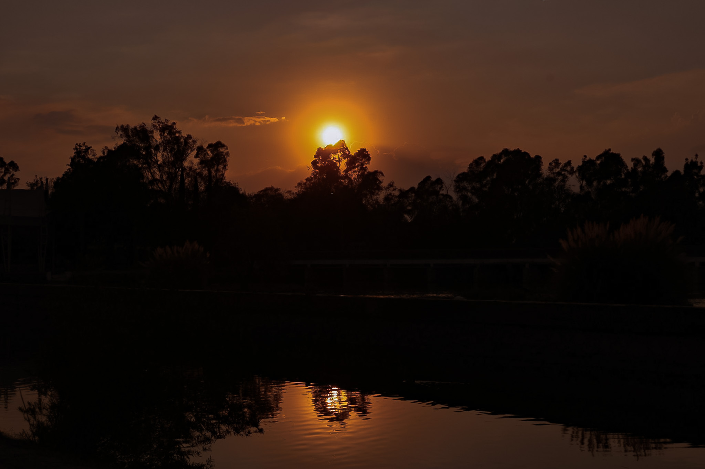
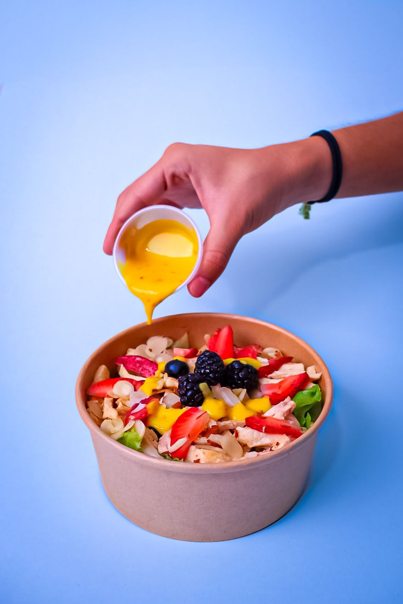
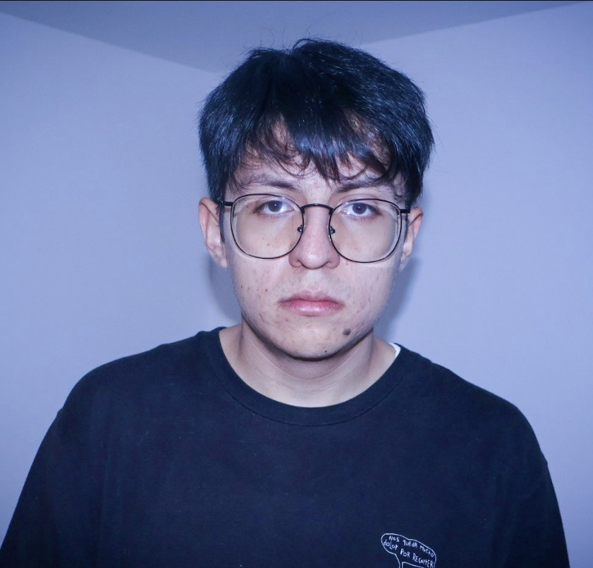
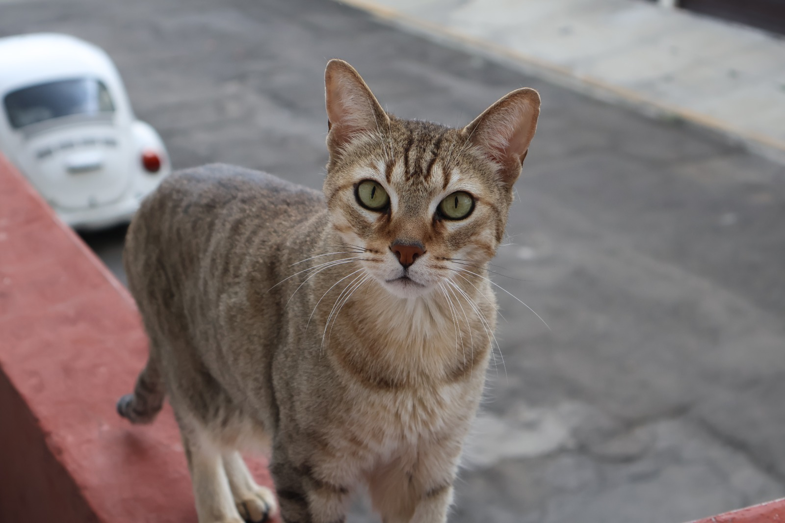
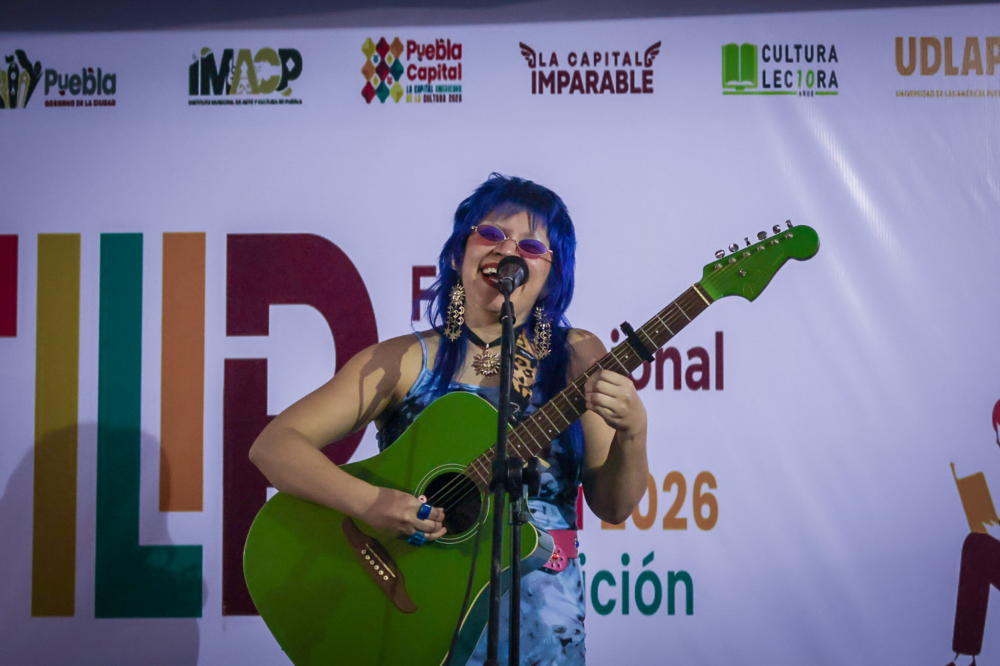
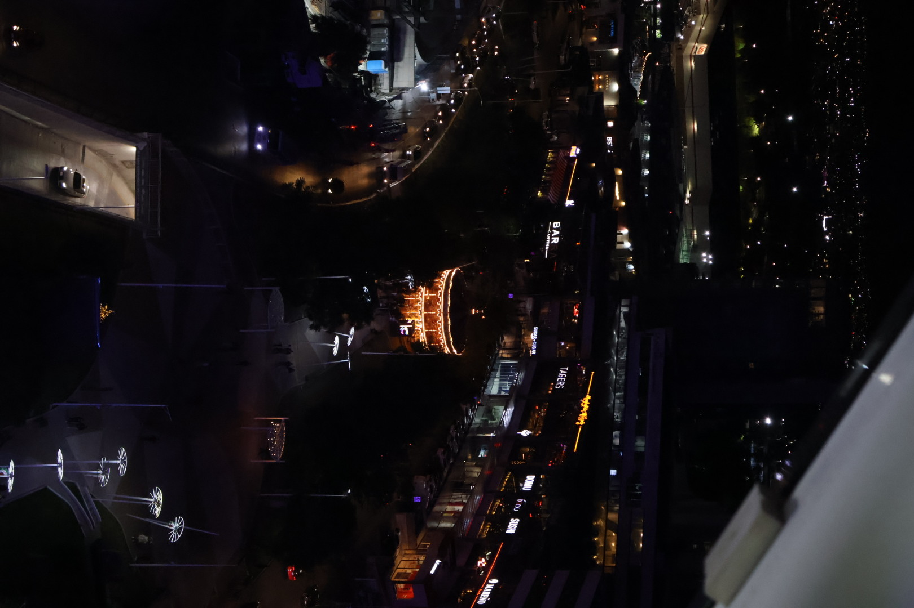

Para mi la fotografía tiene un significado especial, ya que personalmente es una forma de congelar momentos especiales y capturar la belleza del entorno y poder viajar en el tiempo a las experiencias pasadas. Me gusta mucho la fotografía documental, surrealista, de retrato, de paisajes y la macrofotografía, son estilos en los que me gustaría especializarme y seguir mejorando. Fuera de la fotografía me gusta un poco de todo, las series, la música, los animales, la naturaleza, el amor, la intensidad y la soledad, me gusta ver más allá de lo que la gente puede ver y trato de reflectarlo en lo que hago en mi día a día. Las fotografías son capsulas del tiempo, llenas de historias y emociones.
Ver portafolio
Paisaje
Las fotografías de paisaje son mis favoritas, me gusta congelar los ambientes para después poder regresar a ellos.

Ensalada
Pienso que la fotografía de producto y alimentos es el arte de hacer tangible del deseo y de crear fascinación por la estetica.

Francisco Gonzales "Pakitiur"
Siento que no hay nada más bonito que hacerle fotos a tus amigos, para mi la cámara deja de ser algo intimidante y se vuelve un pretexto para reírse, pasar el rato y capturarlos tal como son, sin poses raras ni filtros de más. Hagamos una sesión tranqui, como salir a dar una vuelta entre amigos.

Gato
Sé lo difícil que es tomarles una foto decente con el celular, salen movidas, o voltean justo cuando disparas, o terminas con cien fotos borrosas en la galería. Por eso me encanta hacer sesiones con mascotas donde hay cero estrés, mucha paciencia, premios y juegos para capturar sus caritas más tiernas, sus miradas curiosas o sus momentos de pura locura.

Pequeña presentación de Rubimente en la FILIP
Mi objetivo es capturar la vibra real de los eventos, congelar las sonrisas y todos esos detalles que hacen los momentos unicos.

La Isla Angelopolis
Para mí, la fotografía nocturna tiene una vibra muy especial. La ciudad cambia por completo cuando se mete el sol: el ritmo baja, las sombras ganan protagonismo y cualquier esquina común se vuelve interesante con el brillo de un farol, un reflejo en el asfalto o las luces de neón.
Instagram: @framedby.Sarah
Número: 22-11-19-76-27
My Pixieset: https://sarahalarcon.mypixieset.com
Puebla, Pue.